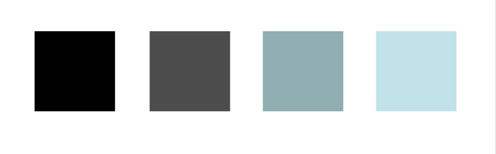
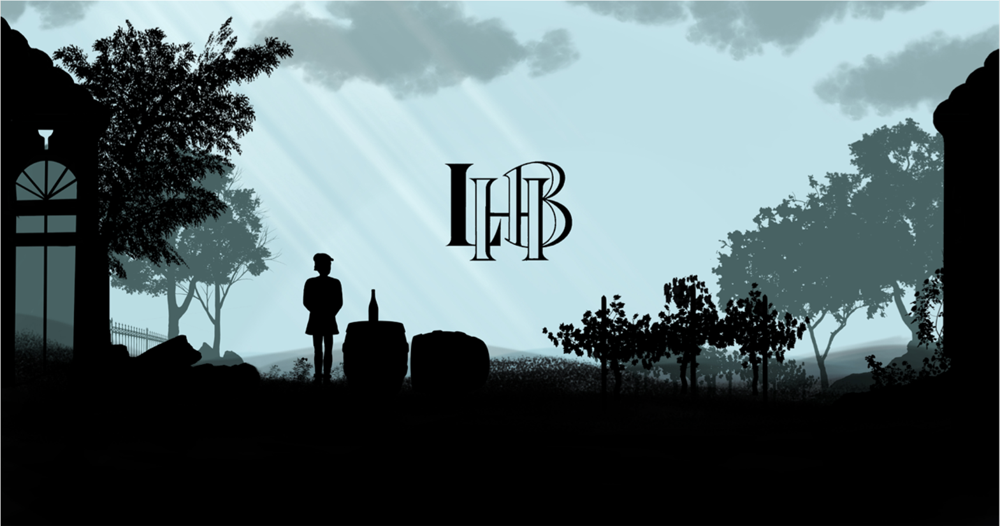
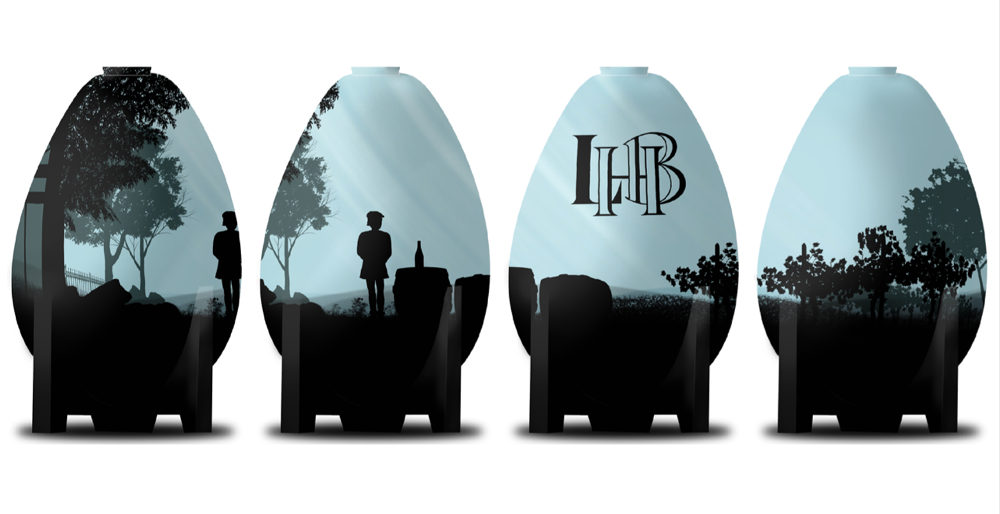
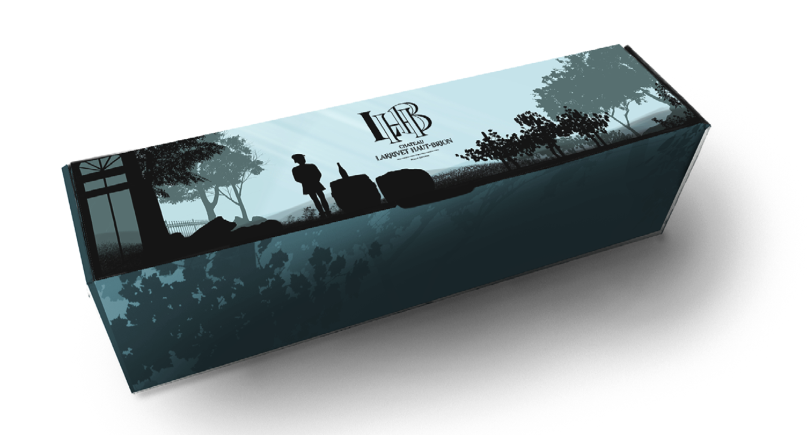
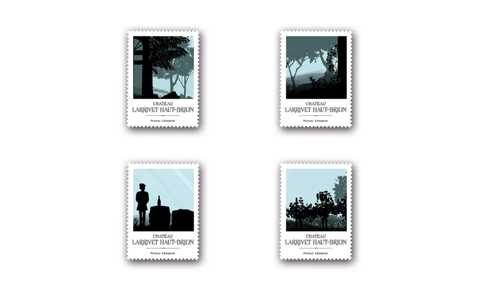

As close as possible to its terroir and the work of a goldsmith on the vine, Château Larrivet Haut-Brion is open to the world and wants to give all wine lovers the taste of travel and gastronomic escapades. For several years now, the castle has been offering ECV students the opportunity to create a visual on ovoid vats to promote their production.
In order to continue the "collection" of vats made in partnership between Château Larrivet Haut-Brion and ECV Bordeaux, we are asked to create a thematic decor and as the main theme the terroir.

To answer this type of subject I make sure I have already understood the issues around the castle. For me, the terroir evokes a return to the source. The choice of colour depends on the idea and the sensations.The basic idea is to redo a Chinese shadow painting by choosing black for this idea.
The other colours are there to represent the morning dew. Showcasing the owner enjoying his vines in the early morning. I also studied the castle to be as close as possible to the architecture, topography and flora present on the estate.




“One is all, All is one ”